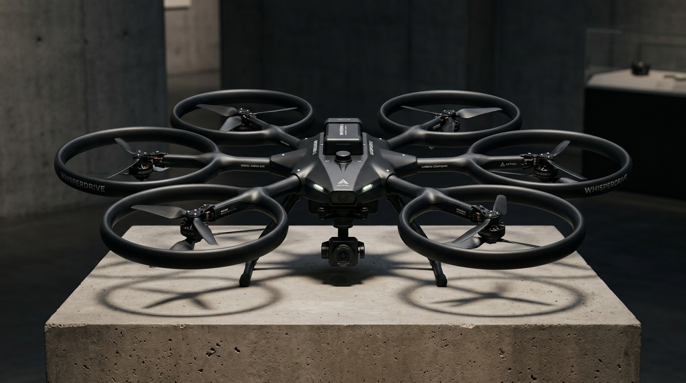
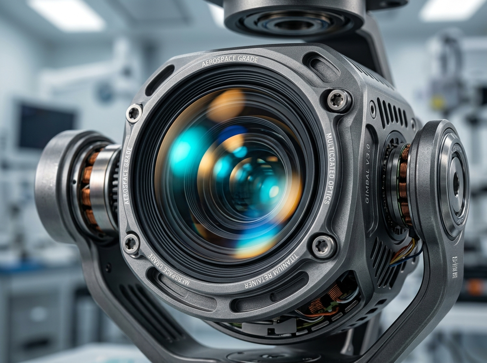
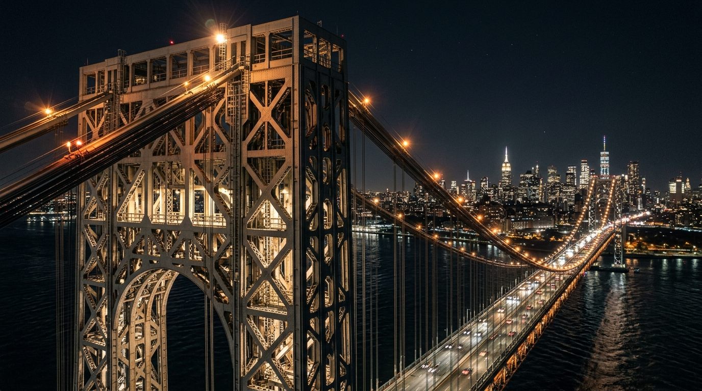

CHAPTER 06
Visual Exhibition
A curated photographic retrospective celebrating the form, surface textures, and optical captures of Gravitas across natural horizons and architectural studies. Select any plate to inspect full-resolution telemetry.

PLATE 01 // HEX ARCHITECTURE
3/4 Architectural Elevation

PLATE 02 // AERIAL
Glacial Crevasse Topography

PLATE 03 // MACRO
Optical Core & Gimbal Fork

PLATE 04 // ACTION
Pacific Ridge Vehicle Tracking

PLATE 05 // LOW-LIGHT
Nocturnal Pylon Structural Scan

PLATE 06 // CANOPY ECOLOGY
Old-Growth Canopy Transect